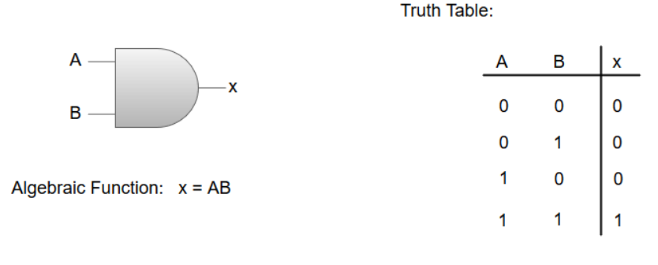
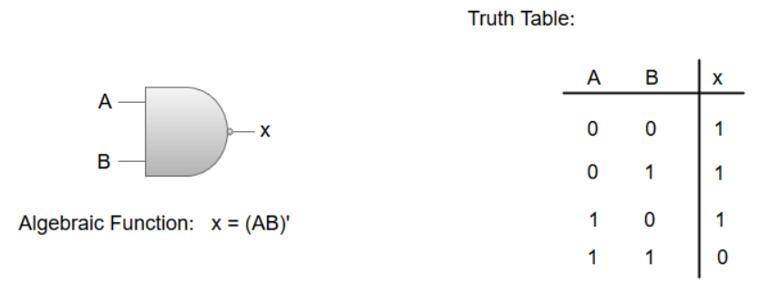
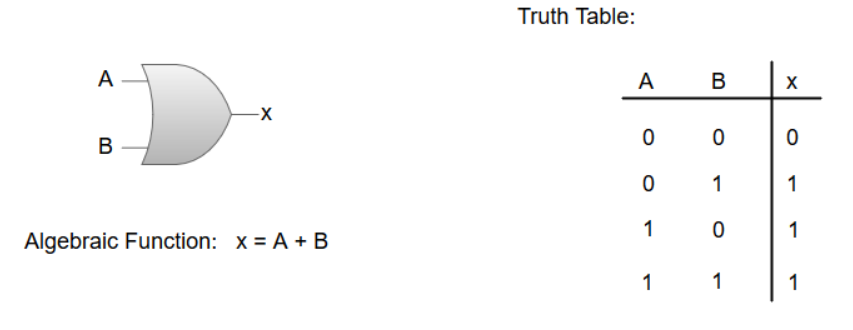
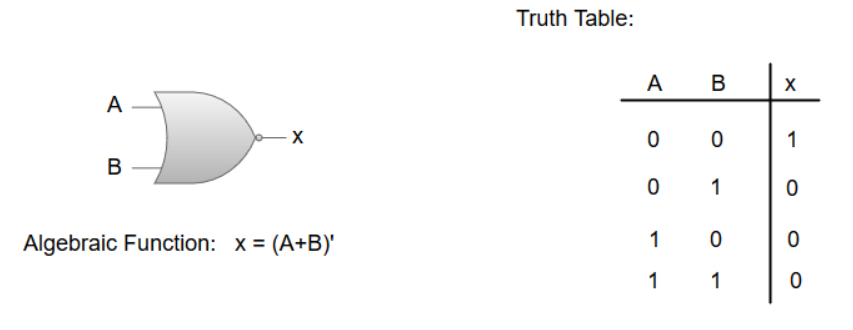
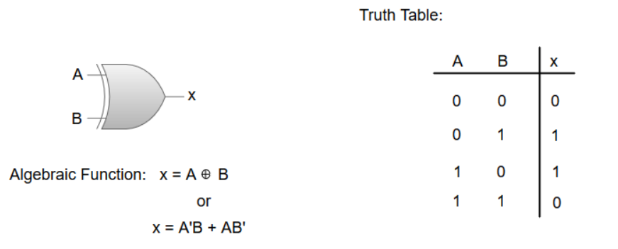
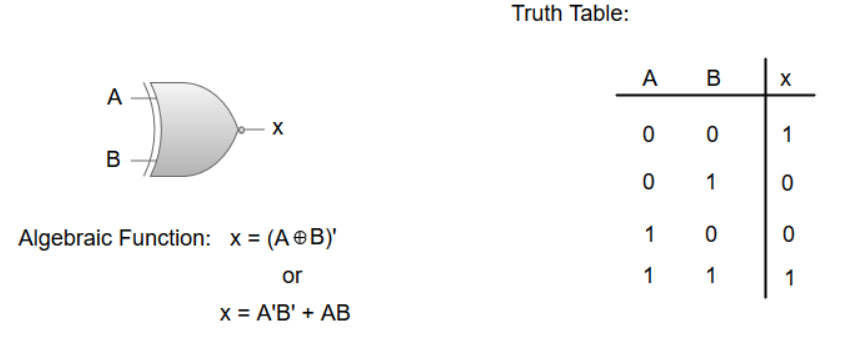
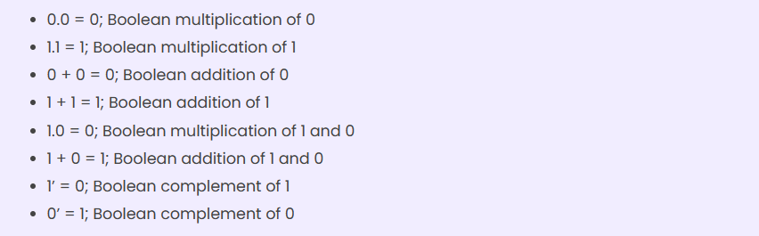

Number system is important from the viewpoint of understanding how data are represented before they can be processed by any digital system including a digital computer
Number system with a base value of 10 is termed a Decimal number system. It uses 10 digits i.e. 0-9 for the creation of numbers. Here, each digit in the number is at a specific place with place value a product of different powers of 10. Here, the place value is termed from right to left as first place value called units, second to the left as Tens, so on Hundreds, Thousands, etc. Here, units have the place value as 100, tens have the place value as 101, hundreds as 102, thousands as 103, and so on.
Number System with base value 2 is termed as Binary number system. It uses 2 digits i.e. 0 and 1 for the creation of numbers. The numbers formed using these two digits are termed Binary Numbers. The binary number system is very useful in electronic devices and computer systems because it can be easily performed using just two states ON and OFF i.e. 0 and 1. Decimal Numbers 0-9 are represented in binary as: 0, 1, 10, 11, 100, 101, 110, 111, 1000, and 1001
Octal Number System is one in which the base value is 8. It uses 8 digits i.e. 0-7 for the creation of Octal Numbers. Octal Numbers can be converted to Decimal values by multiplying each digit with the place value and then adding the result. Here the place values are 80, 81, and 82. Octal Numbers are useful for the representation of UTF8 Numbers.
Number System with base value 16 is termed as Hexadecimal Number System. It uses 16 digits for the creation of its numbers. Digits from 0-9 are taken like the digits in the decimal number system but the digits from 10-15 are represented as A-F i.e. 10 is represented as A, 11 as B, 12 as C, 13 as D, 14 as E, and 15 as F. Hexadecimal Numbers are useful for handling memory address locations.The hexadecimal number system provides a condensed way of representing large binary numbers stored and processed.
Number system is important from the viewpoint of understanding how data are represented before they can be processed by any digital system including a digital computer
Binary is a base-2 number system that uses two states 0 and 1 to represent a number. We can also call it to be a true state and a false state. A binary number is built the same way as we build a normal decimal number.
Binary arithmetic is an essential part of various digital systems. You can add, subtract, multiply, and divide binary numbers using various methods. These operations are much easier than decimal number arithmetic operations because the binary system has only two digits: 0 and 1.
1’s complement of a binary number is another binary number obtained by toggling all bits in it, i.e., transforming the 0 bit to 1 and the 1 bit to 0.In the 1’s complement format , the positive numbers remain unchanged . The negative numbers are obtained by taking the 1’s complement of positive counterparts
for example +9 will be represented as 00001001 in eight-bit notation and -9 will be represented as 11110110, which is the 1’s complement of 00001001.
A logic gate is a simple switching circuit that determines whether an input pulse can pass through to the output in digital circuits.
*The logic gates are the main structural part of a digital system.
*Logic Gates are a block of hardware that produces signals of binary 1 or 0 when input logic requirements are satisfied.
*Each gate has a distinct graphic symbol, and its operation can be described by means of algebraic expressions.
*The seven basic logic gates includes: AND, OR, XOR, NOT, NAND, NOR, and XNOR.
*The relationship between the input-output binary variables for each gate can be represented in tabular form by a truth table.
*Each gate has one or two binary input variables designated by A and B and one binary output variable designated by x.
The AND gate is an electronic circuit which gives a high output only if all its inputs are high. The AND operation is represented by a dot (.) sign.
The NOT-AND (NAND) gate which is equal to an AND gate followed by a NOT gate. The NAND gate gives a high output if any of the inputs are low. The NAND gate is represented by a AND gate with a small circle on the output. The small circle represents inversion
The OR gate is an electronic circuit which gives a high output if one or more of its inputs are high. The operation performed by an OR gate is represented by a plus (+) sign.
The NOT-OR (NOR) gate which is equal to an OR gate followed by a NOT gate. The NOR gate gives a low output if any of the inputs are high. The NOR gate is represented by an OR gate with a small circle on the output. The small circle represents inversion.
The 'Exclusive-OR' gate is a circuit which will give a high output if one of its inputs is high but not both of them. The XOR operation is represented by an encircled plus sign.
The 'Exclusive-NOR' gate is a circuit that does the inverse operation to the XOR gate. It will give a low output if one of its inputs is high but not both of them. The small circle represents inversion.
The NOT gate is an electronic circuit which produces an inverted version of the input at its output. It is also known as an Inverter.
Boolean algebra is a type of algebra that is created by operating the binary system. In the year 1854, George Boole, an English mathematician, proposed this algebra. This is a variant of Aristotle’s propositional logic that uses the symbols 0 and 1, or True and False. Boolen algebra is concerned with binary variables and logic operations.
The Boolean algebraic functions are mostly expressed with binary variables, logic operation symbols, parentheses, and equal sign. For a given value of variables, the Boolean function can be either 1 or 0.
In addition to these Boolean algebra laws, we have a few Boolean postulates which are used to algebraically solve Boolean expressions into a simplified form.
A famous mathematician DeMorgan invented the two most important theorems of boolean algebra. The DeMorgan's theorems are used for mathematical verification of the equivalency of the NOR and negative-AND gates and the negative-OR and NAND gates. These theorems play an important role in solving various boolean algebra expressions. In the below table, the logical operation for each combination of the input variable is defined
According to the first theorem, the complement result of the AND operation is equal to the OR operation of the complement of that variable. Thus, it is equivalent to the NAND function and is a negative-OR function proving that (A.B)' = A'+B'
According to the second theorem, the complement result of the OR operation is equal to the AND operation of the complement of that variable. Thus, it is the equivalent of the NOR function and is a negative-AND function proving that (A+B)' = A'.B' and we can show this using the following truth table.